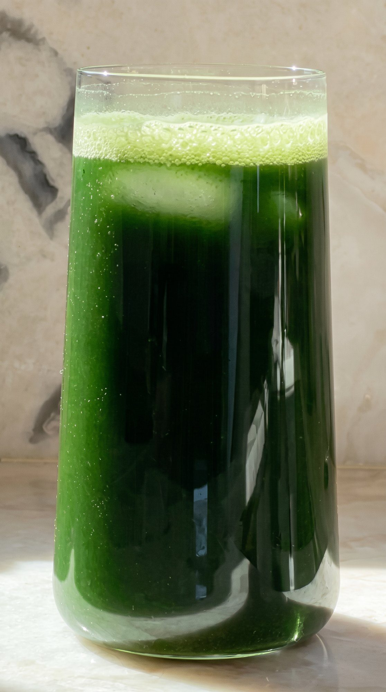

Ciência · Origem e qualidadeFeito no Brasil,
Feito no Brasil,
do pó ao pote.
Indústria brasileira, lote rastreável em cada pote e todas as informações à vista no rótulo.

Indústria brasileira, lote rastreável em cada pote e todas as informações à vista no rótulo.
Cada pote passa pelo mesmo caminho. Nada escondido, tudo no rótulo.

Couve, espirulina, abacaxi, hortelã, guaraná e outras frutas, folhas e raízes.

Feito no Brasil, por indústria brasileira, do pó até o pote.
225 g por pote. 30 doses de 7,5 g, com medida dentro.
Impressos em cada pote, para você saber de onde ele veio.
Rico em vitamina C, zero lactose e não contém glúten.
Bem fechado, lugar fresco e seco. Aberto: até 60 dias.
Notificado, dispensado de registro conforme RDC 240/2018.